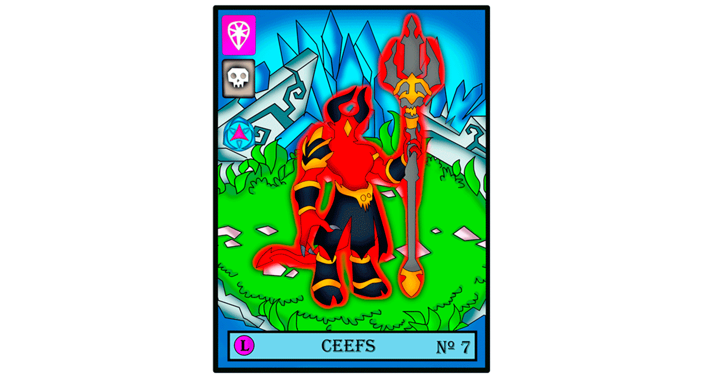

Rearmed is a monster-themed NFT project, running under the Atomic Hub WAX network. The theme of Rearmed is simple so it is quick and easy to understand. Our collection is classified by seasons, If you are looking for information about the initial season, you can find it here. This season is very short and it is one of the first to make itself known.
The new collection called "The Metropolitan Era" is not known exactly how many NFTs there will be, but it is very certain that there is a preview that in this collection the "Rare and Epic" monsters will have a very important participation. important.
Rearmed is part of the Atomic Hub WAX Creative network, It is a totally legitimate collection, it has the Actomic Hub whitelist verification.
One of the collectibles this season will be Ceefs, a monster that is really evil and will be able to help you in the battles that you must fight. In addition, he has an incredible strength that will be of help to you. We must take into account that, In this season, the rare and epic will have a greater participation, however the team does not rule out the possibility of having a Halloween special in which they will make gifts with different monsters that contain the theme, certainly the collection, it develops very well and is to be expected to be one of the best. If you have doubts, do not forget to visit the main section to answer each one of them.